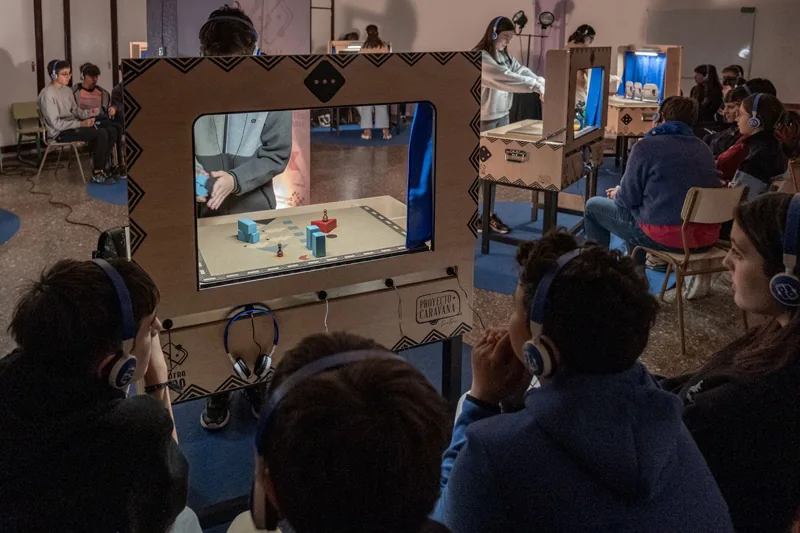
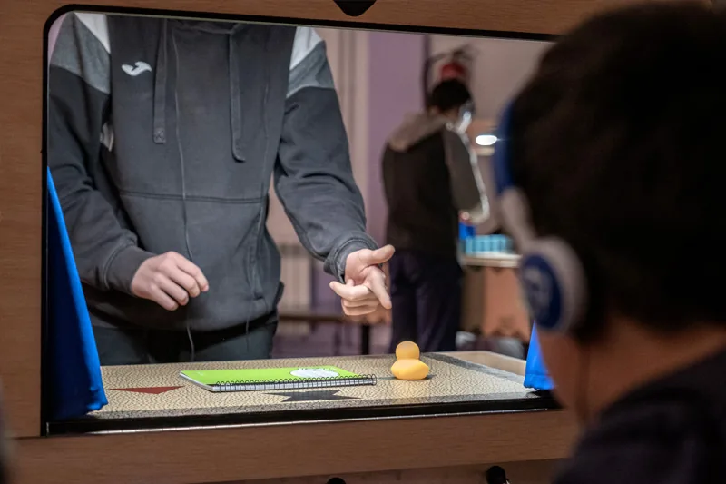
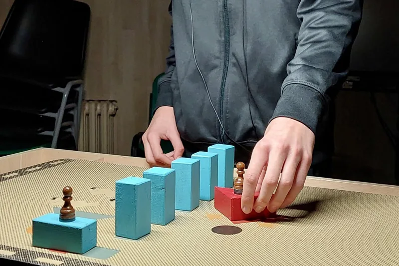
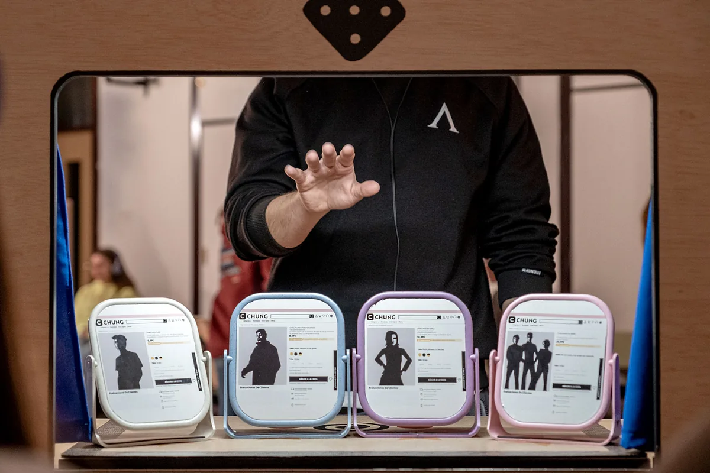

El otro lado: la electrónica de seis teatros en miniatura
«El otro lado» es un espectáculo de microteatro social de Proyecto Caravana sobre el acoso escolar, para público juvenil. La instalación son seis teatros en miniatura, y en cada uno se representa una historia diferente.
Diseñé y construí toda la electrónica de la instalación: una caja para cada teatro, con Arduino y una placa con los componentes soldados a medida.
Fotos del espectáculo
-

-

-

-

Fotos: Proyecto Caravana.
Cómo funciona
-
Dos públicos, dos audios
- A un lado del teatro se sienta quien hace de actor, y al otro, los espectadores
- El actor escucha una grabación con las instrucciones de lo que tiene que hacer
- Los espectadores escuchan la narración de la historia
- Los dos audios van sincronizados
-
Una caja en cada teatro
- Un Arduino Nano que lo coordina todo
- Dos reproductores de sonido con tarjeta microSD, uno para cada audio, con su amplificador
- Botones de reproducir, pausar y parar, y luces que indican el estado
- Conectores para enchufar el equipo de sonido y los interruptores
-
Preparado para crecer
- El sistema admite más elementos, como luces o una máquina de vapor
- En esta versión del espectáculo, solo se usó el audio
Tecnología que no se ve
En escena, la tecnología tiene que pasar desapercibida: cada caja se pone en marcha con un botón y hace su trabajo sin ordenador, para que lo que cuente sea la experiencia de quien actúa y de quien mira.
Si tienes un espectáculo, una exposición o una instalación que necesite electrónica a medida, hablemos.